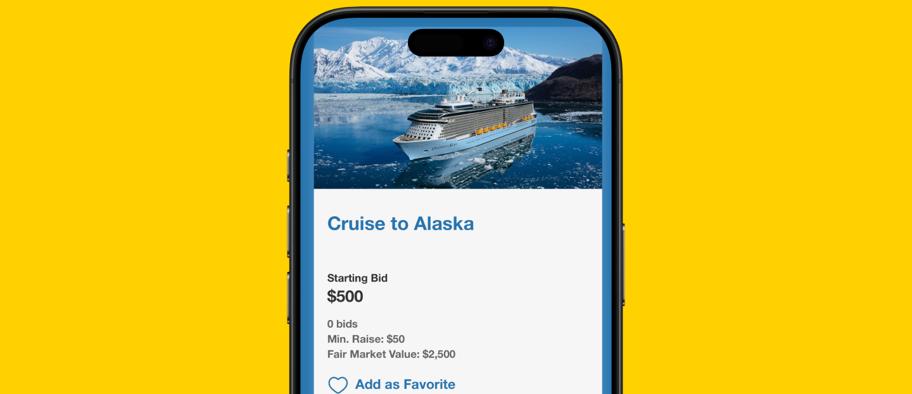
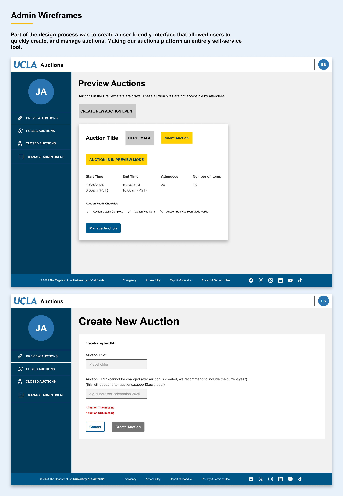
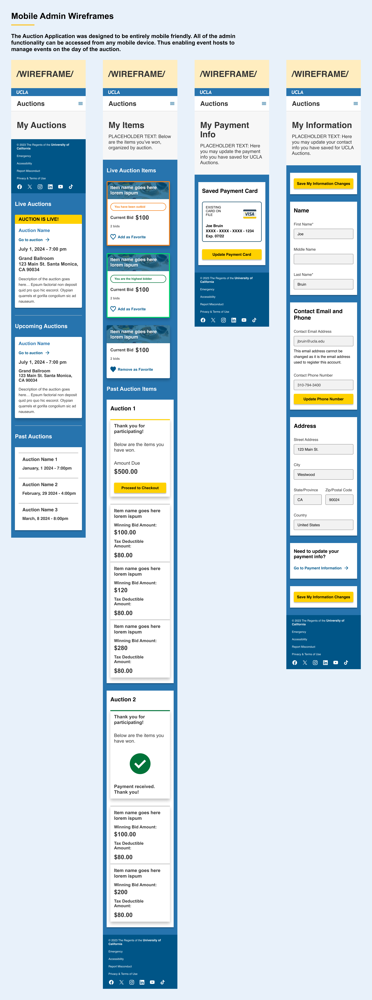
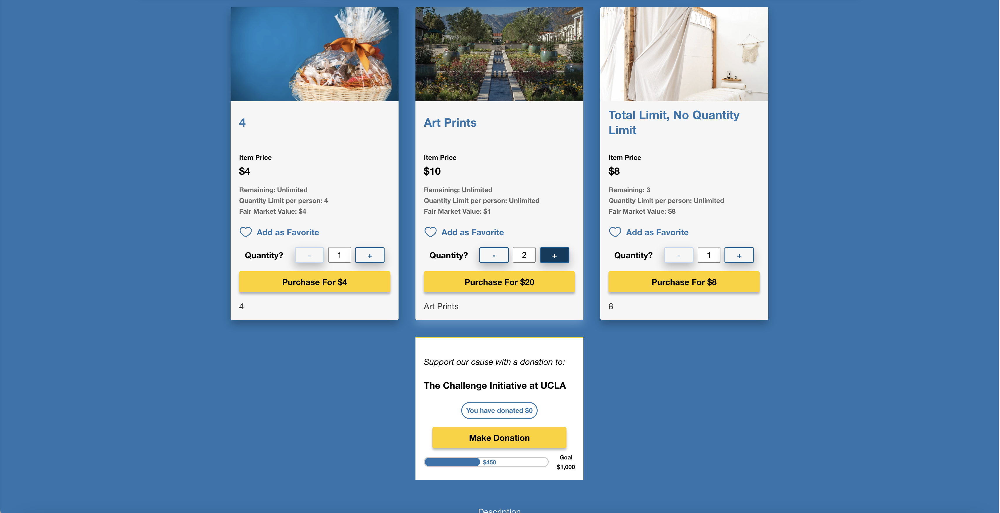
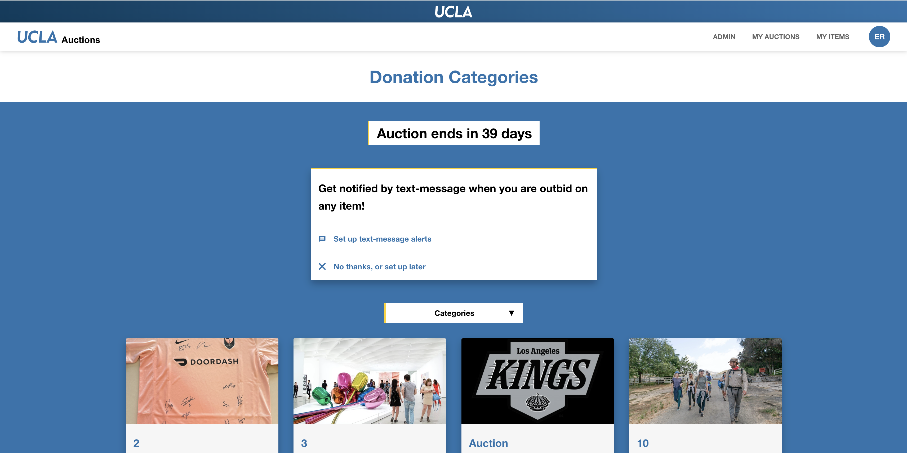
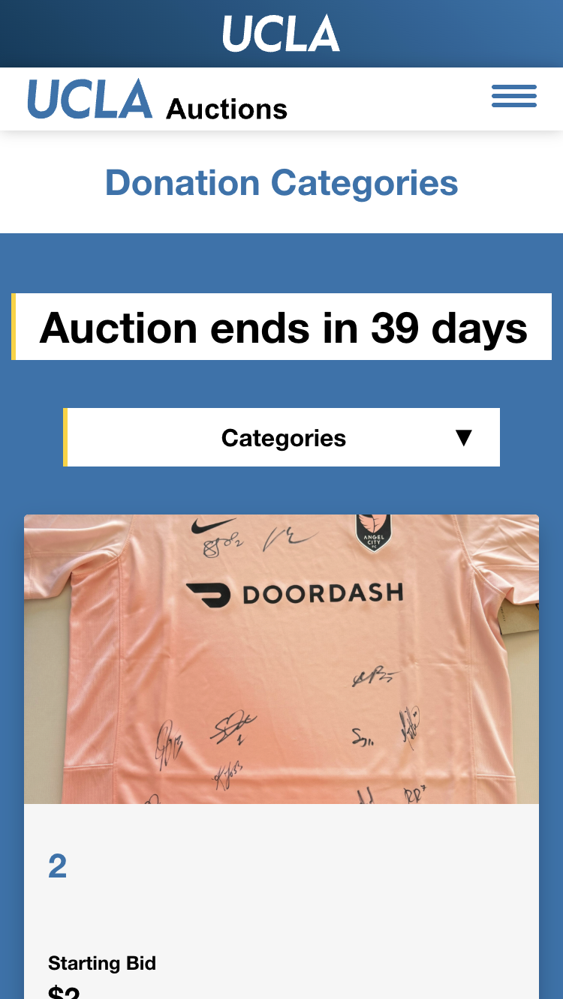
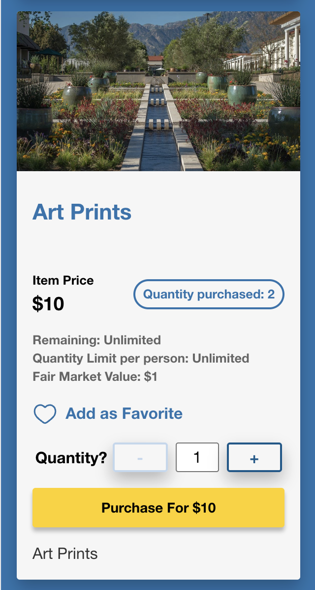

UCLA Auctions: Self-Service Auction Platform
Project Overview
UCLA frequently hosts fundraising auctions with items donated by alumni, departments, and community supporters. The existing solution — a patchwork of third-party auction platforms — couldn't securely integrate with UCLA's internal systems, required IT involvement for every event, and offered no mobile experience for bidders.
My team designed and developed a custom in-house auction platform that empowers UCLA event managers to create, configure, and run auctions entirely on their own — without IT support — while providing a fully mobile-responsive bidding experience for attendees.
Design Process
1. Discovery & Research
Conducted stakeholder interviews with UCLA advancement and events staff. Analyzed pain points from previous auction experiences and mapped technical constraints with UCLA IT to define the design boundaries. A critical insight from research: admin users frequently worked on-site during live events using phones or tablets — making mobile-first a non-negotiable requirement for both admin and bidder interfaces.
2. User Flows & Wireframes
Created simplified flows for key tasks: event creation, item listing, live bidding, and winner notification. Built parallel flows for the admin experience (event setup, item management, live monitoring) and the public bidder experience (browse, bid, confirm) to ensure neither was treated as secondary.
3. UI Design & Prototyping
Designed a clean, intuitive interface on-brand with UCLA's digital identity. Accessibility and clarity were prioritized for a broad public audience — many bidders would be first-time users at a live event, with no time to learn a new system. Prototypes covered event creation, item uploads, and live bidding management.
4. Testing & Iteration
Ran usability tests with event managers using Figma prototypes. Iterated based on feedback to improve image upload flows and item status tracking — two areas where initial designs created confusion. Also simplified the winner notification flow based on feedback from a post-event debrief with the first team to use the platform.
Research Findings
- Event managers reported spending 3–5 hours configuring third-party platforms before each auction — with most of that time spent on workarounds for features the platform didn't natively support
- During live auctions, staff needed to update item statuses in real time from the event floor — a task that was nearly impossible on the legacy system's non-responsive admin interface
- Post-event winner notifications were being sent manually via email after each auction, with an average lag of 2+ days between auction close and notification delivery
Key Screens




Platform Screenshots




Before & After
- 3rd-party tools incompatible with UCLA systems
- IT required for every event setup
- No mobile bidding experience for attendees
- Winner notifications sent manually 2+ days post-event
- 3–5 hours of pre-event admin configuration
- In-house platform with full UCLA system integration
- Self-service setup — zero IT involvement required
- Mobile-first bidding experience for all attendees
- Automated winner notifications triggered at auction close
- Event setup reduced from hours to under 30 minutes
Outcome
The platform was adopted by multiple UCLA departments and now supports several annual auctions. Event setup time was reduced by over 40%, and staff report significantly increased confidence in running auctions independently. The fully mobile-responsive design serves both admin and bidder audiences seamlessly — and automated winner notifications eliminated the 2-day post-event lag entirely.